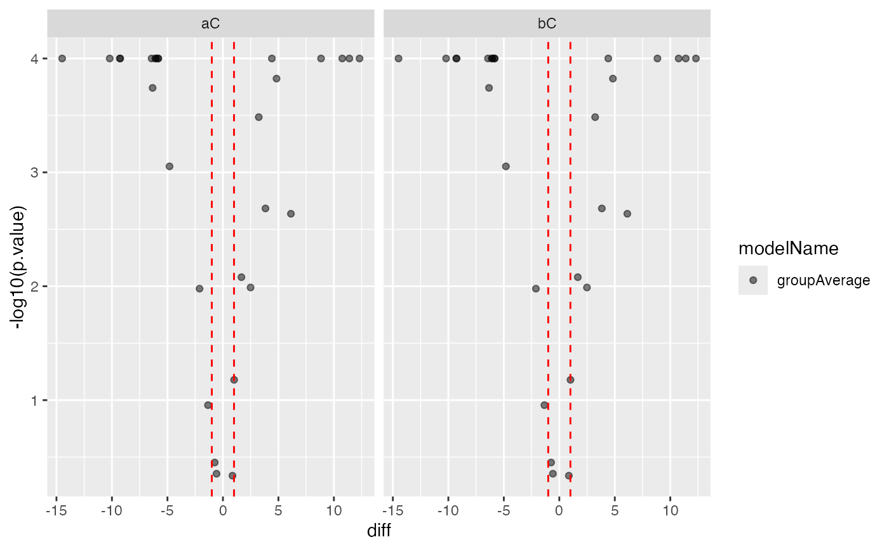

ContrastTable (place holder future baseclass?)
ContrastTable (place holder future baseclass?)
summary_ROPECA_median_p.scaled
Other modelling:
ContrastsModerated,
ContrastsROPECA,
ContrastsSimpleImpute,
Contrasts_Plotter,
Contrasts,
INTERNAL_FUNCTIONS_BY_FAMILY,
LR_test(),
Model,
addContrastResults(),
build_model(),
get_complete_model_fit(),
get_imputed_contrasts(),
get_model_coefficients(),
get_p_values_pbeta(),
isSingular_lm(),
linfct_all_possible_contrasts(),
linfct_factors_contrasts(),
linfct_from_model(),
linfct_matrix_contrasts(),
model_analyse(),
moderated_p_limma_long(),
moderated_p_limma(),
my_contest(),
my_contrast_V1(),
my_contrast_V2(),
my_contrast(),
my_glht(),
pivot_model_contrasts_2_Wide(),
plot_lmer_model_and_data_TWO(),
plot_lmer_model_and_data(),
plot_lmer_peptide_noRandom_TWO(),
plot_lmer_peptide_noRandom(),
plot_lmer_peptide_predictions(),
plot_lmer_predicted_interactions(),
strategy_glm(),
strategy_lmer(),
strategy_lm(),
summary_ROPECA_median_p.scaled()
new()ContrastsTable$new( contrastsdf, subject_Id = "protein_Id", modelName = "ContrastTable" )
get_contrasts_sides()ContrastsTable$get_contrasts_sides()
get_linfct()ContrastsTable$get_linfct()
get_contrasts()get contrasts
ContrastsTable$get_contrasts(all = FALSE)
allshould all columns be returned (default FALSE)
globaluse a global linear function (determined by get_linfct)
get_Plotter()get Contrast_Plotter
ContrastsTable$get_Plotter()
to_wide()convert to wide format
ContrastsTable$to_wide(columns = c("p.value", "FDR"))
columnsvalue column default beta.based.significance
write()write results
ContrastsTable$write(path, filename, format = "xlsx")
pathdirectory
formatdefault xlsx lfq_write_table
clone()The objects of this class are cloneable with this method.
ContrastsTable$clone(deep = FALSE)
deepWhether to make a deep clone.
library(prolfqua) library(tidyverse) bb <- prolfqua::data_ionstar$normalized() configur <- bb$config$clone(deep=TRUE) configur$table$hierarchyDepth <- 2 data <- bb$data lfqdata <- LFQData$new(data, configur) Contrasts <- c("dilution.b-a" = "dilution.b - dilution.a", "dilution.c-e" = "dilution.c - dilution.b") tmp <- ContrastsSimpleImpute$new(lfqdata, contrasts = Contrasts) ctr <- tmp$get_contrasts()#>#>#>#>#> Warning: NaNs producedxcx <- ContrastsTable$new(ctr, subject_Id = tmp$subject_Id, modelName = tmp$modelName) xcx$get_Plotter()$volcano()#> $FDR#> Warning: Removed 100 rows containing missing values (geom_point).#>